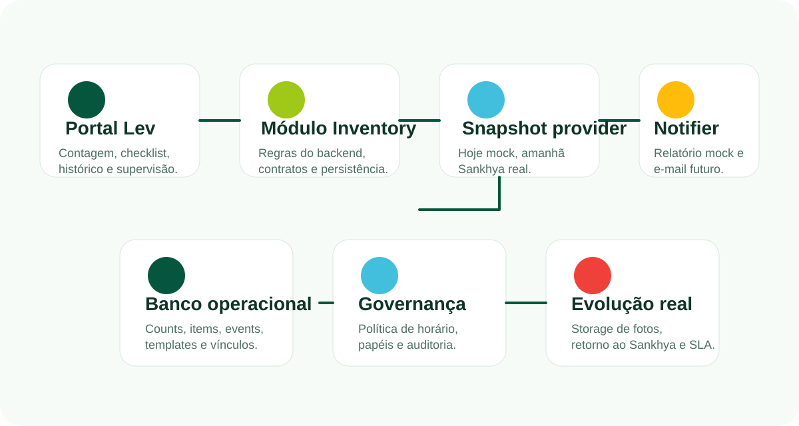

Visão geral
Por que essa ferramenta faz sentido para a operação
Hoje, a contagem de estoque depende muito de rotinas paralelas, alinhamentos manuais, cópias por e-mail e conferências que nem sempre ficam centralizadas. O módulo Estoque nasce para reunir o processo em um só lugar: gerar a contagem, executar o checklist, registrar divergências, anexar provas e manter histórico consultável por loja, pessoa, data e revisão.
Padronização da rotina
Todos os estoquistas seguem o mesmo fluxo no portal, com a mesma ordem de trabalho, o mesmo checklist e o mesmo critério de fechamento.
Rastreabilidade operacional
Cada contagem fica registrada com responsável, loja, data, revisão, divergência, tratativa e evidências visuais de execução.
Visão gerencial imediata
O supervisor consegue acompanhar pendências, reaberturas, acurácia, checklist padrão e alocação de estoquistas sem depender de consolidação externa.
Base para integração real
O módulo já foi desenhado para receber saldo do Sankhya, enviar relatórios reais e evoluir a evidência para storage próprio quando a operação pedir.
Riscos de não ter a ferramenta
O custo operacional de continuar sem uma rotina centralizada
Quando a empresa não possui uma ferramenta dedicada para a contagem de estoque, o processo fica vulnerável a desvios silenciosos, retrabalho e baixa capacidade de reação. O problema não é só demorar mais para contar, mas perder governança sobre o que realmente aconteceu em cada loja.
Baixa rastreabilidade
Sem histórico estruturado, a empresa perde contexto sobre divergência, responsável, tratativa aplicada e reincidência do problema por loja ou por período.
Decisão baseada em percepção
Supervisor e liderança passam a depender de mensagem, planilha, memória operacional e envio manual, em vez de uma fonte única e auditável.
Falha de padrão entre lojas
Cada unidade pode executar a contagem de um jeito diferente, com critérios distintos para checklist, fechamento, tratativa e controle de evidência.
Sem prova operacional
Quando não existe evidência visual antes/depois, a empresa perde força para validar se a rotina foi realmente executada e em que condição ela foi entregue.
Retrabalho gerencial
O supervisor gasta energia cobrando status, consolidando pendências e reconstituindo o processo em vez de atuar na causa raiz e na mobilização da operação.
Dificuldade de integração futura
Sem um fluxo definido agora, a ligação posterior com Sankhya, storage real e relatórios oficiais tende a sair mais cara, mais lenta e mais sujeita a retrabalho.
Como funciona
Fluxo operacional desenhado para o dia a dia da loja
A proposta da ferramenta não é só contar itens. Ela organiza uma rotina inteira: seleção de loja, geração do saldo do sistema, execução física, checklist obrigatório, registro de prova, fechamento do relatório e acompanhamento gerencial.
Fluxo do estoquista
- Seleciona a loja e gera a contagem.
- Recebe os itens puxados do mock que representa o saldo do sistema.
- Conta fisicamente com apoio de botões de ajuste e leitura clara da diferença.
- Executa o checklist da loja com foto antes e depois por tarefa.
- Finaliza somente quando divergências e evidências obrigatórias estiverem tratadas.
- Consulta o próprio histórico com detalhamento completo da revisão.
Fluxo do supervisor
- Define a janela oficial de contagem por horário.
- Gerencia o checklist padrão que passa a valer para novas contagens.
- Pesquisa colaboradores por nome ou CPF e agrega às lojas.
- Visualiza dashboard com lojas pendentes, em andamento, concluídas e reabertas.
- Abre qualquer contagem para revisar divergências, tratativas e provas.
- Pode reabrir revisões quando o processo exigir nova conferência.
Seleção da loja
O estoquista abre a rotina oficial e define a unidade que será auditada.
Geração da base
O sistema monta a base de itens e quantidades para comparação com o físico.
Contagem física
Sistema x físico é ajustado item a item, com leitura rápida do delta e da acurácia.
Checklist com prova
Cada tarefa da loja pode exigir execução, foto antes e foto depois.
Relatório final
A revisão fecha com divergência, tratativa, acurácia e histórico consultável.
Leitura gerencial
O supervisor filtra, acompanha pendências, reabre revisões e conduz tratativas offline.
Módulos do sistema
O que foi construído e qual o papel de cada frente
O projeto foi organizado em frentes que refletem o trabalho real do estoquista, a leitura gerencial do supervisor e a camada técnica necessária para sustentar a evolução.
Contagem
Área central do sistema x físico. Exibe saldo do sistema, contador físico, delta, justificativas, acurácia e relatório final da revisão.
Checklist
Tarefas da loja aplicadas pelo supervisor. Agora cada item pode exigir conclusão, foto antes e foto depois como prova da execução.
Histórico
Lista as contagens já realizadas e abre um detalhe lateral completo para revisão de sistema x físico, divergências, tratativas e evidências.
Dashboard
Resume o andamento do dia e concentra filtros por data, loja e status para leitura rápida da operação.
Gerenciar estoquistas
Troca a lógica de grade por busca orientada. O supervisor pesquisa por nome ou CPF, agrega à loja e mantém uma visão limpa de quem já está vinculado.
Gerenciar checklist
Define o template operacional que será aplicado às novas contagens, inclusive com a lógica de evidência por foto antes/depois.
Contagens realizadas
Histórico consolidado do supervisor com filtros por responsável, loja, acurácia, data e status, além de detalhe lateral clicável.
Mock persistente
Massa de teste local, contratos REST do módulo, persistência em tabelas próprias e preparo para a troca futura da fonte de saldo e das notificações.
Demonstração interativa
Uma versão local para apresentar e navegar sem abrir o painel real
Abaixo está uma prévia semi-operacional da ferramenta. Ela não depende de API, login nem banco real. O objetivo é ajudar em apresentação, treinamento inicial, alinhamento com liderança e conversa de evolução do produto.
Arquitetura e integração real
Como essa solução se conecta ao processo oficial da operação
O módulo atual roda em mock, mas sua estrutura já foi desenhada para a troca por uma integração real. Isso reduz retrabalho no momento de conectar o saldo oficial do sistema, persistir evidências em storage apropriado e enviar relatórios para canais oficiais.

Origem futura das contagens
A visão real deve consultar o Sankhya, olhando o estoque 3005, filtrando apenas saldo positivo e restringindo o conjunto de produtos às famílias aprovadas pela operação.
Regras de produto
O escopo previsto trabalha com bikes, baterias, bikes RVD e linha ONN, será necessário validar códigos, grupos, marcas ou outra classificação confiável.
Relatórios e devolutiva
O relatório já é montado em mock. O próximo passo é decidir destino real de e-mail, formato final, reenvio e eventual retorno da contagem ao Sankhya.
Banco de dados
O que já existe, o que cada tabela faz e o que precisa existir na fase real
A base abaixo documenta o desenho necessário para operar o módulo de estoque de forma consistente. Nesta fase, boa parte do valor já está em funcionamento no mock, inclusive persistência de histórico, eventos e relatório.
public.funcionarios
Cadastro de pessoas que acessam o portal, com CPF, nome, cargo e vínculo operacional.
public.inventory_stores
Catálogo local de lojas atendidas pelo módulo de estoque.
public.inventory_store_assignments
Relaciona loja e colaborador, sustentando quem pode operar ou ser supervisionado.
public.inventory_count_policies
Guarda janela padrão de contagem, timezone e regra operacional vigente.
public.inventory_checklist_templates
Define o cabeçalho do checklist usado pelo supervisor.
public.inventory_checklist_template_items
Lista as tarefas que compõem o checklist padrão aplicado às novas contagens.
public.inventory_counts
É o coração do processo: cabeçalho da contagem, revisão, acurácia, status e snapshot do checklist.
public.inventory_count_items
Persistência do detalhe sistema x físico, diferença, justificativa e categoria do produto.
public.inventory_count_events
Auditoria de gerar, salvar, finalizar, reabrir e demais movimentos relevantes.
public.inventory_report_notifications
Guarda o payload mock do relatório ou do e-mail que a contagem deve produzir.
O que já está resolvido no mock
- Persistência de contagem, itens, eventos e histórico.
- Checklist aplicado por template.
- Evidência antes/depois dentro do snapshot da contagem.
- Relatório final com base em dados estruturados.
O que precisa ser criado ou confirmado para a fase real
- Mapeamento exato do Sankhya para famílias de produto do estoque.
- Regra oficial de loja x estoquista no cadastro operacional.
- Definição de storage real para fotos do checklist.
- Contrato de devolutiva por e-mail e eventual retorno ao Sankhya.
Próximos passos
Como esse projeto evolui depois da homologação
Depois da validação visual e operacional, a evolução natural do documento é conectar o mock ao processo real, fortalecendo integração, evidência e governança da rotina.
Homologação assistida
Ajuste de UX, refinamento do fluxo, treinamento e validação da rotina com massa mock persistente.
Ligação com fonte real
Conectar ao Sankhya para leitura oficial do estoque 3005 e validar critérios de produto, saldo e fechamento.
Governança e evidência
Migrar fotos do checklist para storage dedicado, revisar trilha de auditoria e consolidar permissões finais da v2.
Operação expandida
Ativar devolutiva formal, histórico analítico, relatórios por loja e possíveis novos departamentos consumidores da informação.